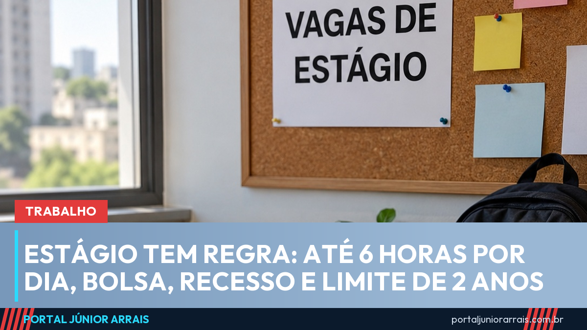

Concurso cultural · Grátis
Ver a pista de hoje
Caça ao Tesouro de Férias: junte as letras e concorra a até R$ 500 em vale-compras
De 31/10 a 08/11, todo dia ao meio-dia, uma letra nova escondida nas matérias do portal. Bateu a meta no Instagram, são 2 vencedores! Resultado na live do YouTube, dia 9/11 às 19h.
Novo · Calculadora
Calcular agora
Quanto sua família vai receber do Bolsa Família a partir de outubro?
Informe quem mora na sua casa e veja o valor de hoje e o valor com o reajuste de 15,04%.
Recall de carro e de produtos: reparo sem custo, consulta pelo chassi e licenciamento
Home office: quem paga as despesas, controle de jornada e volta ao presencial
Como pagar o INSS sem perder o Bolsa Família em 2026: veja o passo a passo
Inscreva-se no canal →
Vizinho barulhento: o que diz a lei, multa no condomínio e como resolver
Cheque especial: juros limitados a 8% ao mês e como sair da dívida mais cara
Auxílio-reclusão: quem tem direito, carência de 24 meses, limite de renda e valor
Laqueadura e vasectomia no SUS: 21 anos ou 2 filhos e sem aval do cônjuge
Seguro de celular e proteção estendida: o que a lei já cobre, venda casada e como cancelar
Jovem aprendiz: idade, contrato de até 2 anos, jornada, salário e FGTS de 2%
YouTube Shorts
Ver todos → Pé-de-Meia universitário: o estudante de faculdade vai receber também?
Pé-de-Meia universitário: o estudante de faculdade vai receber também?
 É verdade que todo mundo vai receber o Pé-de-Meia em 2027? Veja quem entra e quem fica de fora.
É verdade que todo mundo vai receber o Pé-de-Meia em 2027? Veja quem entra e quem fica de fora.
 Minha Casa Minha Vida: mais de 5 mil casas em 21 cidades! Veja se sua cidade está na lista
Minha Casa Minha Vida: mais de 5 mil casas em 21 cidades! Veja se sua cidade está na lista
 Brasil sorridente e sorriso jovem: é a mesma coisa? É do governo?
Brasil sorridente e sorriso jovem: é a mesma coisa? É do governo?
 Gás do Povo em novembro liberado: veja quem recebe
Gás do Povo em novembro liberado: veja quem recebe
Guias do portal
Ver todos os guias →
Bolsa Família
Bolsa Família: quem tem direito, quanto recebe, regra de proteção e o que bloqueia o benefício

BPC/LOAS
BPC/LOAS: quem tem direito, o limite de renda, a avaliação do INSS e o que faz o benefício parar

Benefícios
CadÚnico: o que é, quem pode se inscrever, quando atualizar e quais benefícios dependem dele

Pé-de-Meia
Pé-de-Meia: quem tem direito, quanto o estudante recebe, o que trava a conta e o calendário
Últimas notícias
Justiça
Curatela: quando a família precisa pedir e como fica o benefício do INSS
Economia
Golpe do boleto falso: como conferir antes de pagar e quem responde pelo prejuízo

Trabalho
Estágio: jornada de até 6 horas, bolsa, recesso de 30 dias e quando vira emprego
Justiça
Pensão na gravidez: a gestante pode pedir ajuda do futuro pai antes de o bebê nascer
Economia
Conta bloqueada pela Justiça: o que não pode ser penhorado e o prazo de 5 dias para reagir
Trabalho
Desvio e acúmulo de função: quando dá direito a diferença salarial e o prazo para cobrar
Vídeos em destaque
Ver todos →Me acompanhe nas redes sociais
Siga o Portal Júnior Arrais para receber notícias e vídeos novos todos os dias.